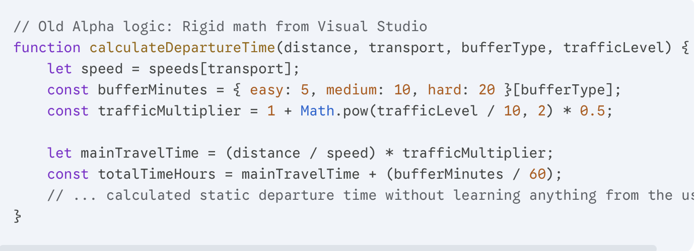
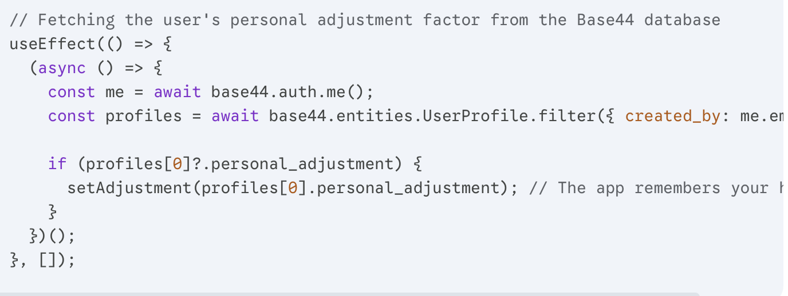
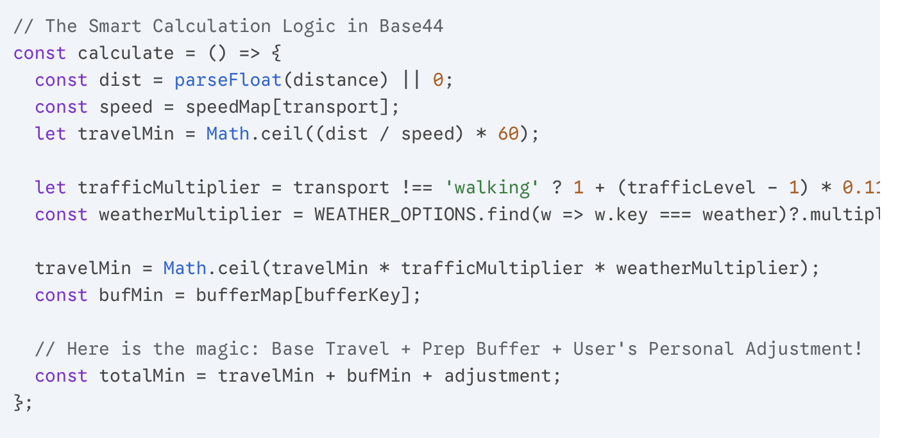

LeaveRight is an intelligent web application designed to solve one of the most common daily problems: determining the exact time to leave to arrive on time. Our application takes into account distance, transportation mode, and desired arrival time to calculate optimal departure with precision.
The Problem
People frequently miscalculate travel time. They don't account for traffic, transportation type, delays, or weather. This causes chronic lateness, stress, missed opportunities, and impacts academic and professional performance negatively.
Why It Matters
Time management is critical for students. Being late impacts grades, builds negative reputation, and increases anxiety. LeaveRight empowers users to control schedules and eliminates stress from rushing or arriving late.
What Makes It Unique
Unlike simple calculators, LeaveRight adds intelligent buffer time and accounts for real-world conditions. It considers transportation methods with accurate speeds and adds safety margins. This comprehensive approach ensures more accurate, reliable results.
Development Process
1. Version Timeline (Alpha - Beta - Final)
🔴 Alpha Version
My first prototype was just a basic math tool with a simple dark interface. Users could manually type the distance, pick their walking speed, and choose transport or preparation buffers from standard, generic browser dropdowns. It had a basic traffic slider (1-10) and calculated a static departure time. The trip history was a boring vertical text list, and deleting cards had a bug that reloaded the whole page. The settings screen was also very minimal.
🟡 Beta Version
For the Beta, I completely rebuilt the UI to make it look modern. I replaced the plain background with a live, animated New York nightscape using HTML5 Canvas (with moving cars and blinking windows). I used a "Glassmorphism" style for all cards, turning them into blurred frosted glass. I deleted the boring dropdowns and made custom tiles with neat vehicle icons and toggle pills for buffers. The traffic slider also became colorful, changing from green to red. Finally, I added a sidebar navigation menu to switch pages instantly.
🟢 Final Product
This is the ultimate version with real utility. I integrated a fully interactive map right into the main dashboard to visualize routes. I also built a proper Stats tab with colorful analytical charts (bar, line, and donut charts) showing total trips and transport choices.
But the smartest feature is the adaptive learning survey: after saving a trip, you can log if you were late or early. The app calculates a rolling average of your last 5 trips and automatically fixes future calculations just for you! I also added email reminders, a 5-language switcher, and light/dark theme toggles.
Evidence of Development
To prove Maulen and I built this app, here is the technical breakdown. We coded our initial Alpha version locally in Visual Studio using basic JavaScript. Later, we migrated the project to Base44 to build the Final version, which allowed us to use React and connect a real database to make the calculator much smarter.
Code Evolution: From Simple Math to Smart Logic
In the Alpha version, our code was just a rigid math formula. It calculated the travel time but completely ignored human habits or changing weather:

Место для фото — код Alpha версии
For the Final version in Base44, Maulen and I made the app adaptive. First, the app connects to our Base44 database to check if the user has a history of being late, and pulls their personal time adjustment:

Место для фото — код Final версии (Base44)
Next, our new logic applies live environmental multipliers (traffic/weather) and automatically injects the user's personal adjustment into the final formula:

Место для фото — код применения live multipliers
Visual Proof: Before vs. After
The Inputs: Alpha used standard, generic browser dropdowns that were tiny and hard to use. In the Final version, we built custom tile buttons with transport icons and sleek toggle pills.
The Map Layer: Our old Visual Studio prototype had no route visualization, while our Base44 version features a real interactive map component.
Bug Fix: In Alpha, deleting a history card used a crude script that forced a glitchy page reload. In the final product, Maulen and I fixed this so cards disappear instantly and smoothly using React states.
Question 1: What improved the most from Alpha to Final?
Answer: Honestly, the overall logic and how the app works improved the most. In the Alpha version we made in Visual Studio, it was just a simple, rigid math calculator that completely ignored real-life human habits. But in the final version on Base44, Maulen and I made it adaptive by connecting a database so it checks if a user is usually late or early, and then it automatically fixes the formula using their personal adjustment factor. Also, adding the weather multipliers and traffic levels made it way more accurate than before.
Question 2: What feedback was most useful?
Answer: The most useful feedback came from our project sponsor during the Alpha stage. They told us that while our basic math worked fine, the interface looked super boring, outdated, and uninspiring with those standard browser dropdown menus. That critique really pushed us to switch to Base44 and completely redesign everything into custom clickable tiles, neat toggle pills, and an interactive map layout. It completely changed how the app feels to use every morning.
Question 3: What would you still improve?
Answer: If we had more time, we would definitely connect the app to a live traffic API. Right now, our Base44 app uses a manual traffic slider where users have to guess the congestion level by themselves, which isn't always accurate. It would be much cooler and more helpful if the app could just automatically track real-life road accidents and traffic jams on its own without making the user do it manually.
How It Works
1
Distance
How far to go
2
Transport
Walking, driving, transit
3
Arrival Time
When you need to arrive
4
Departure Time
Perfect leaving time
Try It Now
Prototype
Interactive Preview
Explore the LeaveRight prototype and feel how fast planning a trip can be with animated travel visuals, timing controls, and quick departure suggestions.
Q: What is your initial impression of the LeaveRight project?
"The concept is excellent and addresses a real problem that affects students daily. I was impressed by how straightforward the solution is, yet effective. The timing calculation logic is sound and practical."
Q: Do you think this application has market value?
"Absolutely. The problem of being late is indeed relevant, especially among students. An application like this could be genuinely useful in everyday life. The target audience is clear, and the pain point is real."
Q: What are your thoughts on the user interface?
"The simplicity of the interface is a significant advantage. Users don't want to waste time on complex settings. The clean design makes it accessible to everyone, regardless of technical skill level."
Q: What improvements would you suggest?
"For future versions, I recommend integrating real maps services like Google Maps and incorporating live traffic data. These features would make the application truly professional-grade and competitive in the market."
Q: Final thoughts?
"The project has genuine practical value. With the suggested improvements, this could become essential for time-conscious individuals. Keep the interface simple while expanding backend capabilities."